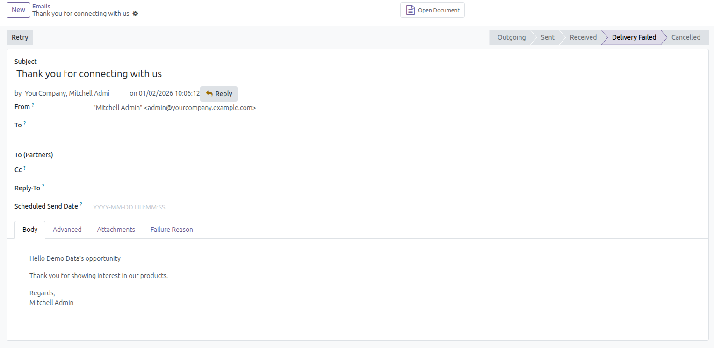

Inom CRM Lead Automation Module is a professional Odoo solution designed to automate lead communication by sending emails automatically whenever a new lead is created. This module helps businesses respond faster to potential customers, improve engagement, and streamline the lead management process.
With this module installed, every newly created lead instantly triggers an automatic email notification. The system ensures consistent communication, eliminates manual follow-ups, and enhances overall CRM efficiency.
Manual lead follow-ups are time-consuming and prone to delays or human error. Inom CRM Lead Automation Module removes these challenges by automating email communication at the moment a lead is created, ensuring no opportunity is missed.
1. Create a new lead in Odoo CRM → The system automatically triggers an email.
2. Email is sent instantly → Based on the configured email template.
3. Lead is saved → Communication is logged for future reference.
Below are preview images of the module interface and automated email workflow.

For support, bug reports, or customization requests, please contact us:
Email: info@inomerp.in
We provide a one-time setup and installation service completely free of cost on any Odoo-supported server. Our experienced technical team ensures proper installation, configuration, and deployment so you can start using the module smoothly without any technical complications.
Important Note:
Free support is provided for issues caused by the standard Odoo source code
related to this module. Any issues arising due to third-party modules,
custom developments, or compatibility conflicts are outside the scope of
free support and may be chargeable.
For demos, customization, or enterprise support, connect with our team:
https://www.inomerp.in/contactus